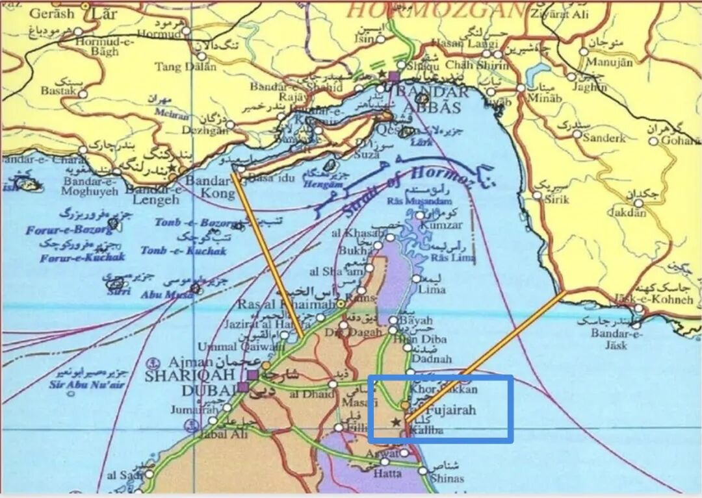

川普的护航成功了吗？
来源:
太阳照常升起
发布时间:
2026-05-05
原文链接:
https://mp.weixin.qq.com/s/vPOcJmCWQjgPWAhTZiY2SA
川普宣布自5月4日起开始所谓的“自由计划”（Project Freedom），旨在引导“中立且无辜的旁观者”安全驶离霍尔木兹海峡。同日，美国海军中央司令部宣布，2艘悬挂美国国旗的商船已成功穿越海峡。
伊朗则声称，IRGC两枚导弹击中一艘美军军舰，并致其后撤；美国未否认伊朗的攻击，但否认被击中。
先看川普的“自由计划”到底是什么。
按照Axios和ABC News引用美国官员的表态，
“自由计划”并非直接护航，而是美军在附近提供威慑、航线指导和避雷支持
。按照美国海军中央司令部5月4日发布的“
霍尔木兹海峡有序通行条件
”，其对拟保护的商船的建议是：“选择穿越霍尔木兹海峡的船只应考虑通过阿曼领海、交通分离方案以难的航线。由于预期交通流量较大，建议通过VHF 16频道与阿曼当局协调，以维持航行安全”。
什么意思？
我大美利坚海军远远地保护你们，你们自己去跟阿曼协调，走阿曼的领海出来，中途别跟我们联系，我们手机关机，谢谢！
美军这次连建议的航线图都没发布，主打一个：
我们给你们打气，你们自己努力，有事找阿曼处理。
阿曼能说什么呢？无论官方还是媒体，阿曼都对美国护航计划没有任何回应。
阿曼心里想，你们就闹吧，就这么一直闹吧，最后都去毁灭吧
很显然，美国海军创造性地扩张了“护航”的内涵。其实何必这样复杂？美国军舰撤回本土，然后在互联网上发贴宣誓远程护航，效果不是一样的吗？何苦还要在海峡外围烧油呢？
美国没护航还相安无事，一护航，商船开始遭殃。
韩国报告称，一艘商船在海峡内发生爆炸并起火。英国海上安全机构UKMTO报告称，两艘船只在阿联酋海岸附近遭到袭击，阿联酋石油公司ADNOC表示，一艘空载油轮被伊朗无人机击中。
沙特有石油管道输出，叠加巴基斯坦护卫，最近悄无声息，闷声发财。
海湾国家中最不满的还是阿联酋。
阿联酋在海湾国家的经济转型是最靠前的，开战前，阿联酋GDP的约75%已经来自于非石油部门（金融、贸易、航空、物流、旅游等）。但美伊一打，阿联酋这些转型就停滞了，不但停滞，全球对这个地区的信心也没有了。一个常年打仗的地方，怎么可能搞好金融和贸易呢？房价也大幅下跌。
于是阿联酋在5月1日退出欧佩克，同时也退出了阿拉伯石油输出国组织（OAPEC）。
这意味着，阿联酋的产油量不再受到这两个组织的约束，这对全球油价下降是有利的，对川普当然也有利。但对沙特则不利。因为阿联酋的石油收支平衡价在50美元/桶左右（也就是油价超过50美元/桶就不亏），而沙特的平衡价在80-90美元/桶。如果阿联酋大幅增产，未来海峡通航，那油价就可能跌至沙特盈亏平衡线之下。所以，
阿联酋的不满不只是针对伊朗，其实也是针对沙特。
这就是海湾地区逊尼派伊斯兰国家之间的塑料兄弟情。
就在美国宣布护航海峡之后，
伊朗
针锋相对地公布了新的海峡控制区域图：

那两根在海峡前后侧的直直的
黄线
，就是IRGC新公布的伊朗控制区域。
为什么这次要画这么明显呢？请看图中作者用
蓝色线框出
的部分，那就是
阿联酋的富查伊拉港（Fujairah）。
富查伊拉这个地方，很有意思。阿联酋的全称是“阿拉伯联合酋长国”，富查伊拉就是七个酋长国之一。富查伊拉港的位置很特殊，它属于阿联酋，但几乎在霍尔木兹海峡的最外侧，位于阿曼湾，南边就是阿曼。
在川普还没有听信郭图的计策去各地打击伊朗影子舰队的时候，
海湾地区的塑料兄弟国曾与伊朗一起在富查伊拉联手赚大钱
。曾经伊朗许多石油类出口产品就是在富查伊拉港进行船对船转运，然后再用其他国家的船只运出霍尔木兹海峡，进入公海的。
此外，富查伊拉港本身还具有庞大的储存与混合能力，承担了阿联酋约1/3的海运原油出口。更重要的是，
阿布扎比原油管道可将150万桶/日原油直接从阿联酋内陆输送至富查伊拉港
，从而绕过传统的霍尔木兹海峡争端区域，确保阿联酋在海峡不可通行时，仍可维持低限度的原油出口。
各位再回到上面那幅地图，尤其是右侧那条黄线，可以看到，在阿联酋宣布退群、川普表示护航后，
伊朗已将富查伊拉港划入其控制范围
。也就是，伊朗认为，阿联酋配合川普一意孤行，既要拉低油价，又要通过富查伊拉继续出口，给川普增加谈判砝码，这怎么行？
伊朗把图画好后，就直接开打了。
5月4日，
富查伊拉石油工业区（Fujairah Oil Industries Zone, FOIZ）遭来自伊朗的无人机袭击后起火，3名印度籍工作人员受伤。当天，伊朗向
阿联酋共发射了12枚弹道导弹、3枚巡航导弹和4架无人机。
要论开打，伊朗还是比川普爽快多了。
与此同时，影子舰队永不停歇。
航路监测显示，5月4日，受美国制裁的LPG油轮
NOOH GAS
（IMO 9034690）使用
双重身份
（同时广播博茨瓦纳旗，并维持第二身份LUMA）向东驶出了霍尔木兹海峡。
5月2日SAR卫星显示，霍尔木兹、格什姆和拉腊克岛之间检测到
57艘船只
，
其中仅
13
艘有AIS信号（海上船舶自动识别信号）
，
44艘处于关闭AIS的"黑暗"状态
。
装载有超过190万桶原油的伊朗超级油轮HUGE号，3月19日前就到达了马六甲海峡，但由于美国军舰加大了在马六甲海峡的巡航，在关闭AIS长达44天后，HUGE号在5月3日-4日穿越了印尼的龙目海峡，驶向廖内群岛，这里是伊朗石油在亚洲的集中转运点。
所以，川普的护航成功了吗？
川普的大飞机不断运东西来，这次的工作汇报，他究竟有没有底气呢？留给他写工作总结的时间已经不多了。
Let's wait and see.
以上。
在混乱的世界中找到一丝清晰，欢迎加入作者的知识星球！